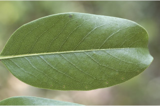
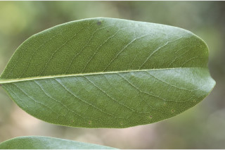
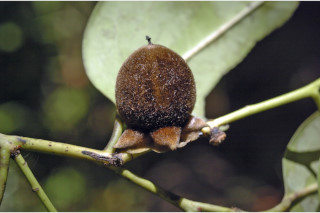
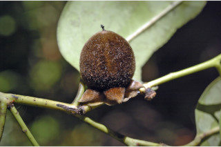

Trees up to 15 m tall.
15 ಮೀ. ಎತ್ತರದವರೆಗೆ ಬೆಳೆಯುವ ಮರಗಳು.
15 മീറ്റര് വരെ ഉയരത്തില് വളരുന്ന മരങ്ങള്.
மரம், 15 மீ. உயரம் வரை வளரக்கூடியது
Branchlets slender, glabrous.
നേര്ത്തതും രോമിലവുമായ ഉപശാഖകള്.
சிறிய நுனிக்கிளைகள் மெலிதானது, உரோமங்களற்றது.
Leaves simple, alternate, distichous; petiole to 2 cm long, canaliculate above; lamina 7-13 x 2.5-7 cm, lamina elliptic-oblong to oblong-lanceolate, shortly and bluntly acuminate or acute, base rounded and slightly decurrent, glabrous, subcoriaceous, nerves finely reticulate; midrib canaliculate above; secondary_nerves 8-11 pairs.
ಕಿರುಕೊಂಬೆಗಳು ತೆಳುವಾಗಿದ್ದು ರೋಮರಹಿತವಾಗಿರುತ್ತದೆ.
ലഘുവായ ഇലകള്, ഏകാന്തരമായി രണ്ടിന്റെ രണ്ടുഭാഗത്തുമായി അടുക്കിയ വിധത്തില്; മുകളില് ചാലുളള ഇലഞെട്ടിന് 2 സെ.മീ നീളം; പത്രഫലകത്തിന് 7 സെ.മീ മുതല് 13 സെ.മീ വരെ നീളവും 2.5 സെ.മീ മുതല് 7 സെ.മീ വരെ വീതിയും, ദീര്ഘവൃത്തീയ-ആയതാകാരംതൊട്ട് ആയതകുന്താകൃതി വരെയുമാണ്, മുനപ്പില്ലാത്ത ചെറു ദീര്ഘാഗ്രമോ നിശിതാഗ്രമോ ആണ്, പത്രാധാരം വൃത്താകാരത്തിലും ചെറുതായി താഴേക്കിറങ്ങിയതും ആണ്, അരോമിലം, ഉപചര്മ്മില പ്രകൃതം, നന്നായി ജാലിതമായ ഞരമ്പുകള്; മുകളില് ചാലുളള മുഖ്യസിര; 8 മുതല് 11 വരെ ജോഡി ദ്വിതീയ ഞരമ്പുകള്.
இலைகள் தனித்தவை, மாற்றுஅடுக்கமானவை, இருநெடுக்கு வரிசையிலையடுக்கம் (டைஸ்டிக்கஸ்); இலைக்காம்பு 2 செ.மீ. வரை நீளமானது, குறுக்குவெட்டுத் தோற்றத்தில் கேனாலிகுலேட்; இலை அலகு 7-13 X 2.5-7 செ.மீ., நீள்வட்டம்-நீள்சதுரம் முதல் நீள்சதுரம்-ஈட்டி வடிவமுடையது, சிறிதானது மற்றும் வால் போன்று நீளமானது, அல்லது கூரியது, அலகின் தளம் வட்டமானது மற்றும் சிறிதளவு டெக்கரண்ட், உரோமங்களற்றது, சப்கோரியேசியஸ், நரம்புகள் நெருக்கமான வலைப்பின்னல் கொண்டது; மையநரம்பு மேற்புறத்தில் அலகின் பரப்பைவிட பள்ளமானது; இரண்டாம் நிலை நரம்புகள் 8-11 ஜோடிகள்.
Flowers unisexual; male flowers in short cymes with 3-4 subsessile flowers in each; female flowers solitary, sessile.
ಎಲೆಗಳು ಸರಳವಾಗಿದ್ದು ಪರ್ಯಾಯ ಹಾಗೂ ಸುತ್ತು ಜೋಡನಾ ವ್ಯವಸ್ಥೆ ಯಲ್ಲಿದ್ದು ಕಾಂಡದ ಎರಡೂ ಕಡೆಯ ಎದುರು ಬದರಿನ ಸಾಲಿನಲ್ಲಿರುತ್ತವೆ; ಎಲೆ ತೊಟ್ಟುಗಳು 0.2 ಸೆಂ. ಮೀ.ಉದ್ದವಿದ್ದು, ಪತ್ರದ ಮೇಲ್ಭಾಗದಲ್ಲಿ ಕಾಲುವೆ ಗೆರೆ ಸಮೇತವಿರುತ್ತವೆ; ಪತ್ರಗಳು 7 – 13 X 2.5 – 7 ಸೆಂ.ಮೀ. ಗಾತ್ರ, ಸಂಕುಚಿತ ಅಂಡವೃತ್ತ- ಚತುರಸ್ರದಿಂದ ಬುಗುರಿ-ಭರ್ಜಿವರೆಗಿನ ಆಕಾರ ಹೊಂದಿದ್ದು ಕಿರಿದಾದ ಮತ್ತು ಮೊಂಡು ಅಗ್ರವುಳ್ಳ ಕ್ರಮೇಣ ಚೂಪಾಗುವ ಅಥವಾ ಚೂಪಾದ ತುದಿ ,ದುಂಡಾದ ಮತ್ತು ಸ್ವಲ್ಪ ಮಟ್ಟಿಗೆ ತಳಭಾಗಕ್ಕೆ ವಿಸ್ತರಿಸಿದ ಬುಡ, ಉಪ-ಕಾಗದವನ್ನೋಲುವ ಮೇಲ್ಮೈ ಹೊಂದಿರುತ್ತವೆ ಹಾಗೂರೋಮರಹಿತವಾಗಿದ್ದು ಬಹು ಸೂಕ್ಷ್ಮವಾದ ಜಾಲಬಂಧ ನಾಳ ವಿನ್ಯಾಸ ಹೊಂದಿದ ನಾಳಸಮೇತವಿರುತ್ತವೆ; ಮಧ್ಯನಾಳ ಪತ್ರದ ಮೇಲ್ಭಾಗದಲ್ಲಿ ಕಾಲುವೆ ಗೆರೆ ಸಮೇತವಿರುತ್ತದೆ; ಎರಡನೇ ದರ್ಜೆಯ ನಾಳಗಳು 8 -13 ಜೋಡಿಗಳಿರುತ್ತವೆ.
പൂക്കള് ഏകലിംഗികളാണ്; ആണ്പൂക്കള് ഓരോന്നിലും 3 ഓ 4 ഓ വീതം ഉപഅവൃന്ത പൂക്കളുളള ചെറുസൈമുകളിലായി ഉണ്ടാകുന്നു; അവൃന്തമായ പെണ്പൂക്കള് ഒറ്റയായുണ്ടാകുന്നു.
ஓர்பால் மலர்கள்; ஆண்மலர்கள் சிறிய சைம் மற்றும் 3-4 மலர்களை கொண்டது; பெண்மலர்கள் தனித்தவை, காம்பற்றது.
Berry, globose, subsessile, 3 cm across, densely brown tomentose; fruiting_calyx_accrescent, strongly reflexed with thin wavy margins; 1-4 seeded.
ಹೂಗಳು ಏಕ ಲಿಂಗಿಗಳಾಗಿರುತ್ತವೆ; ಗಂಡು ಹೂಗಳು ಸಣ್ಣ ಗಾತ್ರದ, 3 ರಿಂದ 4 ಉಪ-ತೊಟ್ಟುಸಹಿತವಿರುವ ಹೂಗಳುಳ್ಳ ಮಧ್ಯಾರಂಭಿ ಪುಷ್ಪಮಂಜರಿಯಲ್ಲಿರುತ್ತವೆ; ಹೆಣ್ಣು ಹೂಗಳು ಉಪ-ತೊಟ್ಟು ಹೊಂದಿದ್ದು ಒಂಟಿಯಾಗಿರುತ್ತವೆ.
1 മുതല് 4 വരെ വിത്തുകള് ഉള്ള കായ, കനത്തില് തവിട്ട് രോമാവൃതമായ, 3 സെ.മീ കുറുകേയുളള, ഉപആവൃന്ത, ഗോളാകാര ബെറിയാണ്; തരംഗിതമായ അരികുകളുളള, ശക്തമായി പിന്നാക്കം വളഞ്ഞ ബാഹ്യദളങ്ങള് കായോട് ഒട്ടിനില്ക്കുന്നവയാണ്.
முழுச்சதைகனி (பெர்ரி), உருண்டையானது, மிகச்சிறிய காம்புடையது, 3 செ.மீ. குறுக்களவுடையது, அடர்ந்த அரக்கு நிறமான உரோமங்களுடையது; பழத்தின் புல்லி இதழ்கள் வளரக்கூடியது, வளைந்தது மற்றும் மெலிதான அலை போன்ற விளிம்பு கொண்டது; 1-4 விதைகளை கொண்டது.


 



 
